| 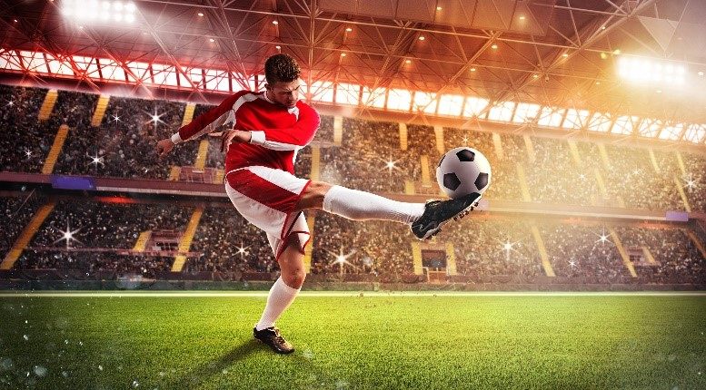 | У всех свои интересы, у кого-то они похожи. Интересы создаются из хобби, увлечений. Интересы бывают разными, от прогулки с друзьями до игры в шахматы. |
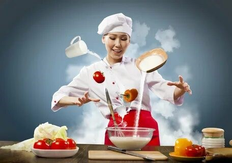 |
| 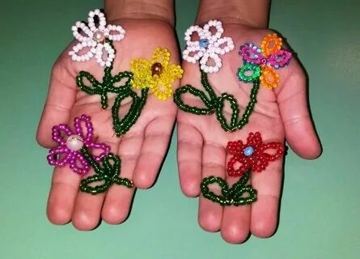 | Здесь представлены наши интересы |
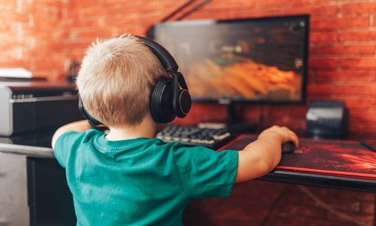 |
| 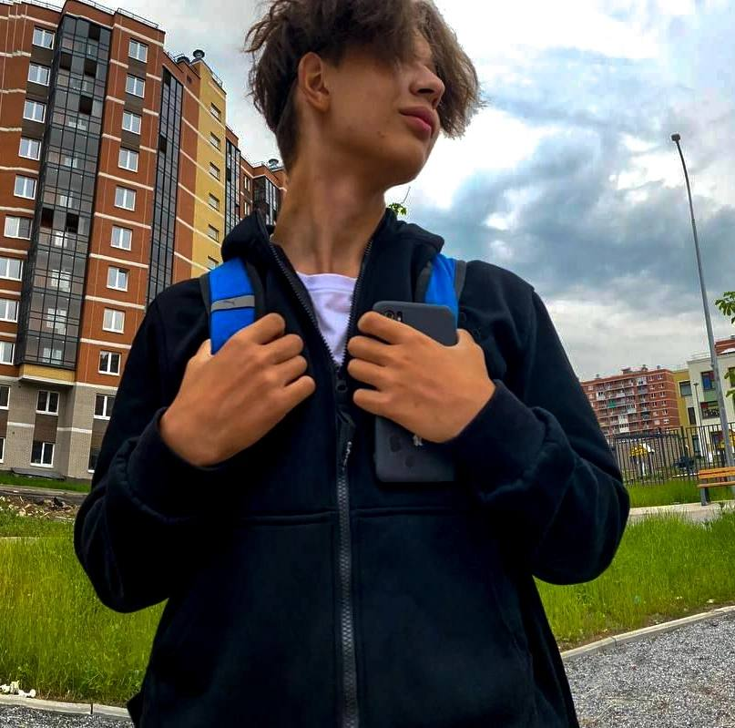 | Я Давид. Учусь в 9 классе 452 школы Санкт-Петербурга. Я с увлечением занимаюсь футболом. Каждую неделю я принимаю участие в тренировках на школьном поле. Эта игра дарит мне возможность выразить себя, преодолевать препятствия и радоваться каждому голу и победе. Футбол - это не просто мое занятие, это моя страсть, которая приносит мне удовольствие и радость. |
| 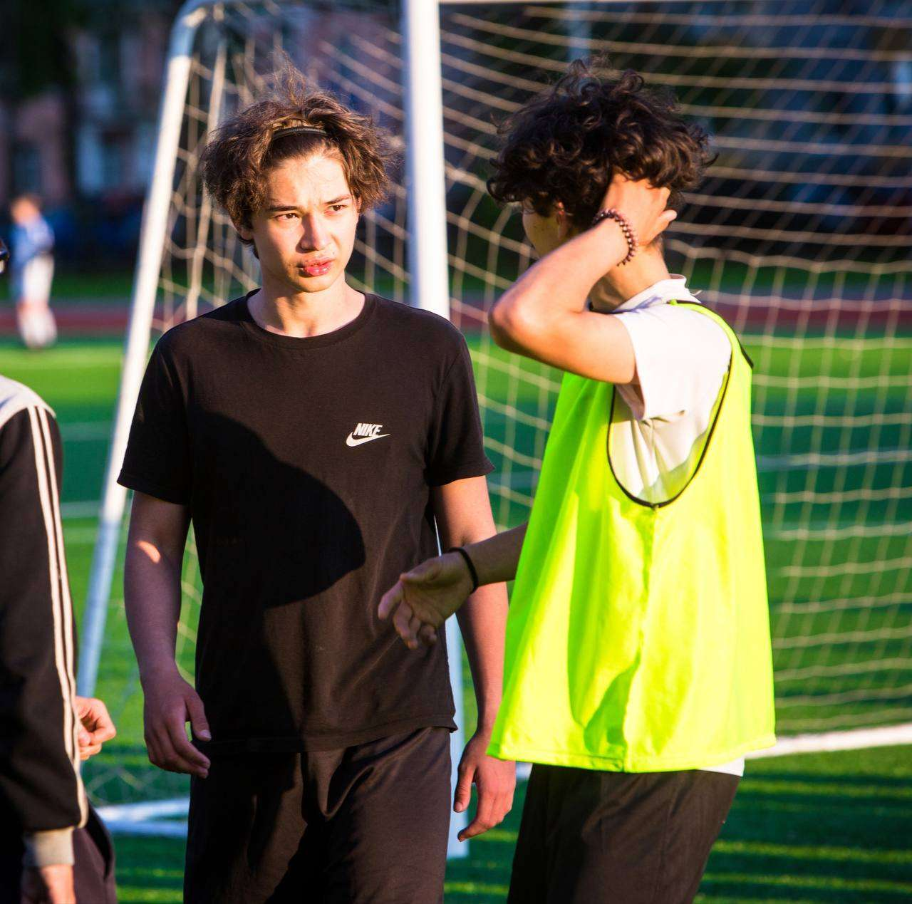 | 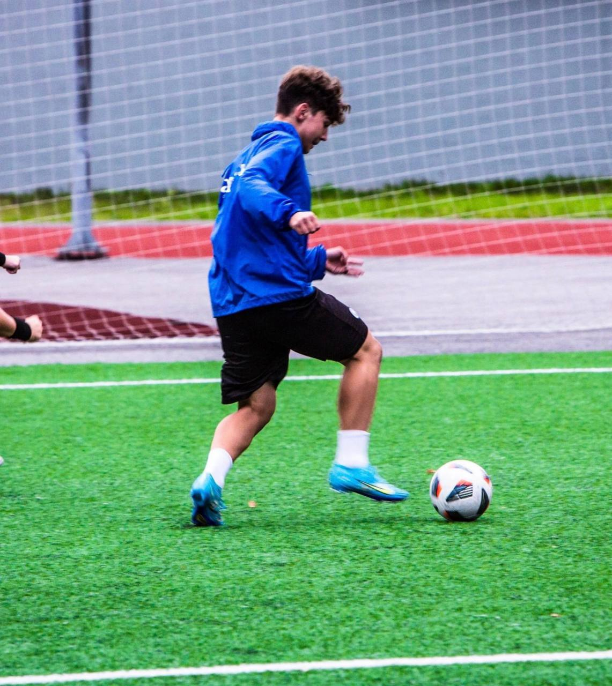 |
| 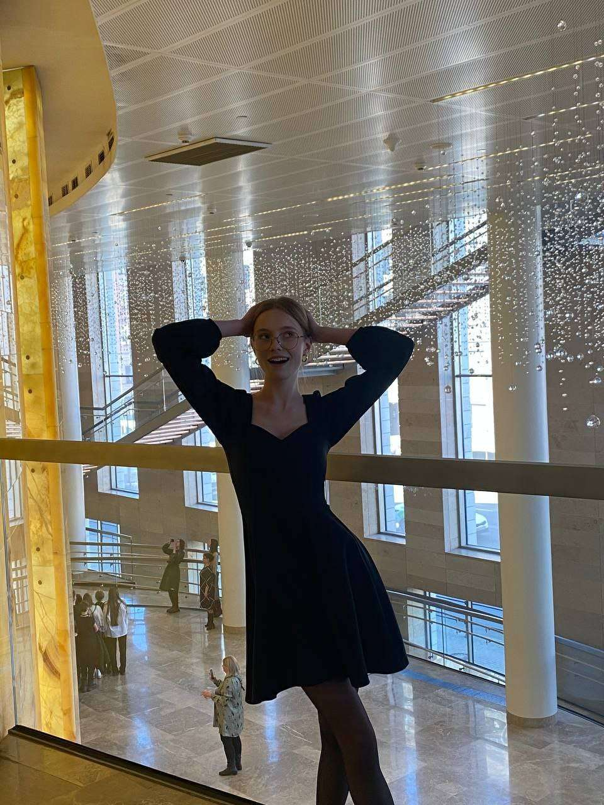 | Я Лиза. Учусь в 9 классе 452 школы Санкт-Петербурга. Мне, как и многим девочкам, нравятся украшения. Из-за этого я решила научиться делать украшения их бисера и бусинок самостоятельно. Помимо бисероплетения я увлекаюсь кулинарией. Мне нравится готовить различные печенья, сладости и просто блюда, чтобы насытиться. Каждый раз я получаю наслаждение от процесса. |
| 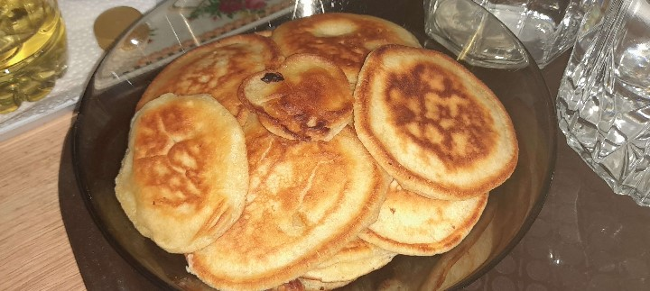 | 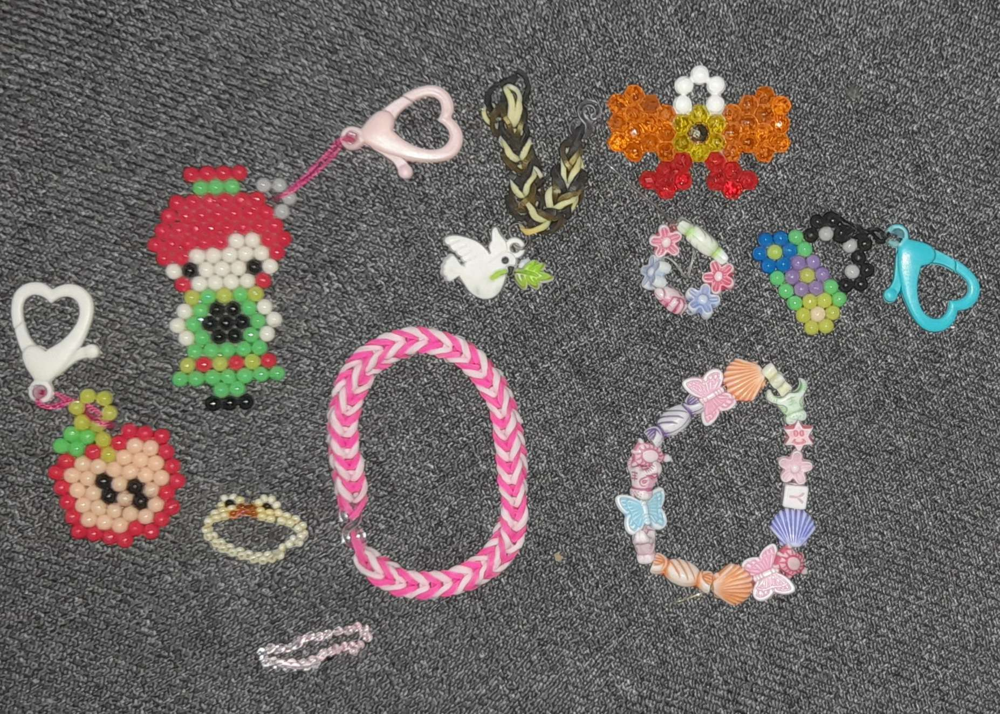 |
| 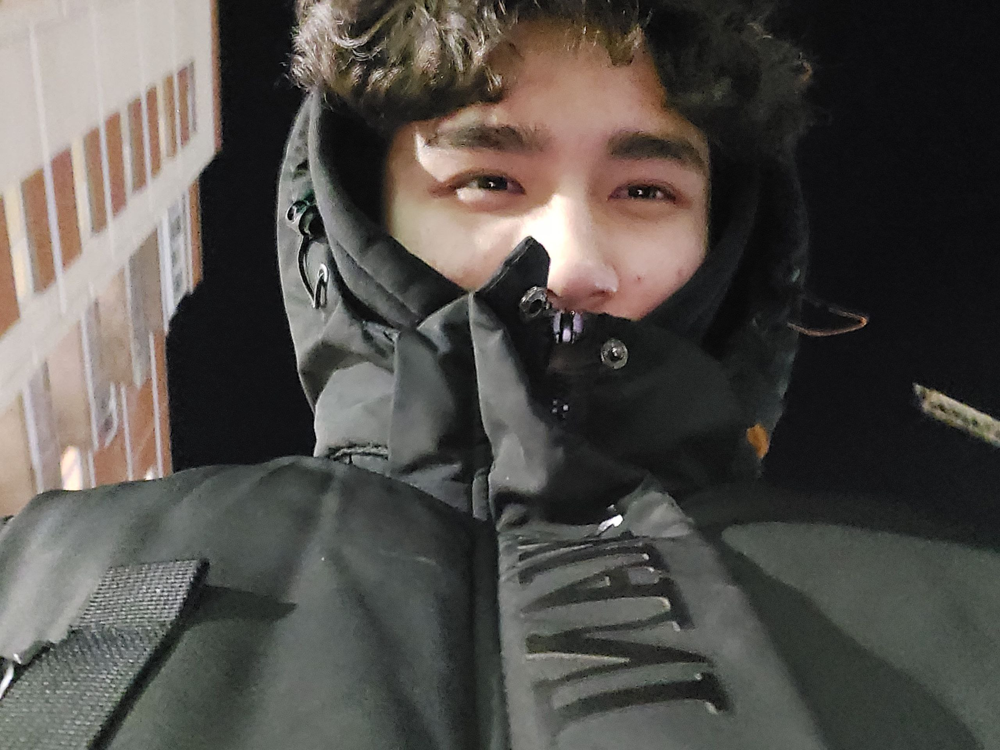 | Я Нурадил. Ученик 9-го класса 452 школы Колпинского района. Я увлекаюсь многим, но больше остального футболом, кулинарией и компьютерными играми. Я посещаю тренировки по футболу, являюсь игроком ФК "Искра". К футболу меня тянуло с рождения и это стало частью моей жизни. Также иногда в свободное время я играю в компьютерные игры с друзьями. Мои родители много готовили и научили меня. Я много готовлю, и это приносит удовольствие. |
| 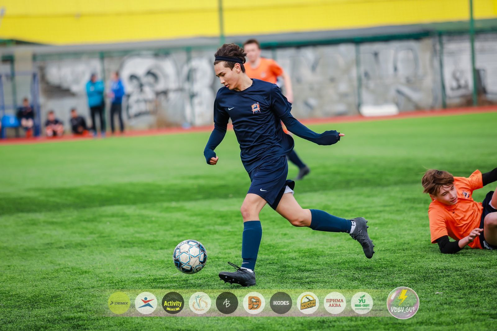 | 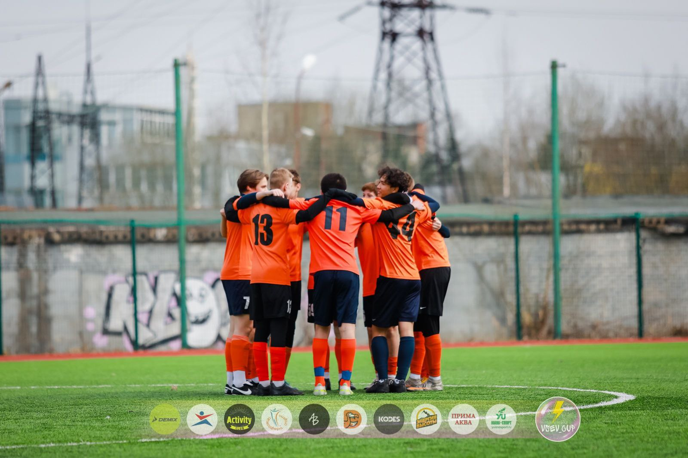 |